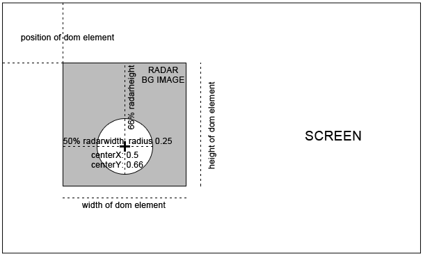

radar Class
radar represents a seperate section on the screen which provides
a 2-dimensional radar indicating where GeoObjects are located
around the user.
The Singleton instance of the class will automatically be created on World
startup and can be accessed via AR.radar.
The position and size of the radar is defined in a DOM-element in the HTML page.
The DOM element for the radar is specified by the container property.
<body>
<div style="position:absolute;top:10px;left:10px;width:50px;height:100px;" id="radarContainer"></div>
</body>
AR.radar.container = document.getElementById("radarContainer");
The meaning of the various properties are described below, refer to the figure below for illustration.

Methods
notifyUpdateRadarPosition
()
Whenever the position of the DOM element containing the radar has changed, this method must be called. It will synchronize the radar's position with the DOM element.
Properties
centerX
Number
Specifies the horizontal position of the center of the actual radar area. The value must be between 0 and 1 and specifies the center of the radar area with regards to the width of the background image. A value of 0.5 places the center of the radar area horizontally in the middle of the radar background image.
centerY
Number
Specifies the vertical position of the center of the actual radar area. The value must be between 0 and 1 and specifies the center of the radar area with regards to the height of the background image. A value of 0.5 places the center of the radar area vertically in the middle of the radar background image.
container
Element
the DOM-element that contains the radar
enabled
Boolean
enabled set to true enables the radar in the view, setting
it to false disables it entirely.
Remark:
The radar can only be displayed if all properties (the only
exception being the northIndicator) is set to a valid value.
maxDistance
Number
Specifies the maximum distance in meters that is covered in the radar. When set to x meters, only
GeoObjects with a distance less or equal to x will be drawn in the radar. If the distance to a certain drawable is
x, the drawable will be drawn on the boundary of the radar.
The value must either be positive, or undefined. In this case, maxDistance will automatically be calculated as
the maximum distance of the GeoObjects in the scene, causing all GeoObjects to be visible in the radar.
northIndicator.image
ImageResource
Specifies the ImageResource used to indicate true north in the radar. The north indicator will be scaled with the same ratio as the radar background image is scaled, refer radar.width for details.
northIndicator.radius
Number
Specifies the radius of the north indicator.
As the north indicator moves as soon as the user starts turning around, northIndicator.radius indicates the distance
of the north indicator image to the center of the radar area.
The value must be between 0 and 1 and specifies the radius with regards to the width of the radar background image.
A value of 0.45 scales the radius of the actual radar area to 45% of the entire width of the radar background image.
It is good practice to set the radius of the north indicator to a slightly higher value that the radar's radius.
This allows the north indicator to not overlap with the radar area.
radius
Number
Specifies the radius of the actual radar area. The radar drawables will not be visible beyond that radius. The value must be between 0 and 1 and specifies the radius with regards to the width of the background image. A value of 0.4 scales the radius of the actual radar area to 40% of the entire width of the radar background image.
Events
onClick
deprecated
The trigger fires when the radar (the area taken up by the background image) has been clicked.